專為追求高效率與道地風味的旅人量身打造：第一天傍晚直奔海雲台享受熱鬧夜市與海風宵夜；甘川洞精緻韓服登頂、國際市場親手挑選真空壓縮莫代爾棉被、東釜山 Skyline Luge 賽道重力狂飆、札嘎其魚市場內行推薦良心攤位現嚐帝王蟹與生魚片大餐！
每一站皆具備5-Point 實地路引要素 ＋ Google Maps 導航 ＋ Naver Map（韓國在地精確步行與公車直連）＋ 多重備用名店，徹底杜絕原地迷航與走回頭路！
在釜山現場導航，只要點擊專屬按鈕，便能在 Google Maps 與韓國在地最精準的 Naver Map 間自由切換。
海雲台 (203)、中洞/尾浦 (202)、Centum City (206)、廣安 (209)、西面 (219)。串連首夜海雲台、汗蒸幕與膠囊列車。
札嘎其 (110)、南浦 (111)、釜山站 (113)、土城 (109)、西面 (119)。縱貫採買棉被與海鮮盛宴之傳統核心。
BEXCO (K118)、奧西利亞 Osiria (K122，直達 Skyline Luge 斜坡滑車)、機張 (K123)。
金海機場 (BGL04) ➔ 沙上站 (227 / BGL01，轉乘地鐵 2 號線直通海雲台或西面)。
韓國因法規限制，Google Maps 僅支援基本圖資與大眾運輸，不支援步行動態導航；而在地人首選的 Naver Map (네이버 지도) 則是精準步行與公車的黃金神器：
適合行前查看位置宏觀分佈、閱讀繁體中文評論與營業時間，一鍵點擊快速確認方位。
實地走動首選！ 支援繁體中文搜尋，精確指出建築大門入口、公車精確到站秒數，以及地鐵捷運「哪節車廂離手扶梯最近」。
順應晚機抵達節奏，先在東釜山海線暢玩，再移師南浦老城採購棉被與海鮮，全日同軸線不折返！
| 天數 | 核心分區 | 骨幹交通 | 核心體驗與打卡亮點 | 精選美食（首選 ✕ 超強備案 ✕ 宵夜） |
|---|---|---|---|---|
| Day 1 | 海雲台夜色 | 輕軌 ➔ 2號線 | 晚間抵達直奔海雲台飯店入住 ➔ 龜南路文化廣場散步 ➔ 海雲台沙灘夜浪 ➔ 海雲台傳統市場宵夜狂歡 |
【晚餐/宵夜首選】尚國家辣炒年糕 ＆ 炭烤盲鰻街 【深夜備案 1】錦秀河豚湯 (24H) 【深夜備案 2】密陽血腸豬肉湯飯 (24H) / 伍班長烤肉 (至04:00) |
| Day 2 | 東釜山海線 | 2號線 + 東海線 | 海雲台藍線公園天空膠囊列車 ➔ 青沙浦灌籃高手平交道 ➔ 東釜山 Skyline Luge 4賽道滑車 ➔ 海東龍宮寺 ➔ 廣安大橋落日夜色 |
【午】青沙浦秀敏家炭烤扇貝 / 尾浦末家海鮮 【午茶】海東龍宮大鐵盤辣炸醬麵 / 機張雪蟹 【晚】廣安里民樂水產市場生魚片野餐 / 蛤蜊1號街 |
| Day 3 | 南浦 ✕ 札嘎其 | 1號線 | 札嘎其市場大樓 100號攤位帝王蟹盛宴 ➔ 國際市場挑棉被＋現場大型真空壓縮 ➔ 搬回飯店 ➔ BIFF廣場黑糖餅 ➔ 影島白淺灘海蝕隧道 |
【午】札嘎其 100號攤位現挑帝王蟹與蟹膏炒飯 【點心】BIFF勝基元祖黑糖餅 / 富平罐頭夜市李家炒年糕 【晚】南浦蔘雞湯 / 元祖漢陽冷菜豬腳 / 巨人炸雞 |
| Day 4 | 甘川 ✕ Centum ✕ 西面 | 1號線 + 2號線 | 甘川洞文化村「哲秀與英熙」精緻韓服登頂 ➔ 小王子同框 ➔ 松島水晶纜車 ➔ 新世界 Spa Land 五星汗蒸幕舒壓 ➔ 西面熟成烤肉 |
【午】新昌土鍋清燉豬肉湯飯 / 甘川灶台魚糕 【午茶】Spa Land 汗蒸幕冰米釀與烤雞蛋 【晚】西面味贊王 3.5cm 熟成厚切鹽烤肉 / 捕盜廳烤肉 |
| Day 5 | 西面文創 ✕ 返程 | 2號線 + 輕軌 | 西面80年老牌豬肉湯飯 ➔ 田浦咖啡街紅磚小巷探索 ➔ 西面地下街美妝雜貨最後採買 ➔ 取回壓縮棉被行李 ➔ 直達機場/高鐵 |
【早午】松亭三代豬肉湯飯 (1946年創立) / 浦項湯飯 【午後】田浦 FM Coffee 精品手沖咖啡 ＆ 法式甜點 |
首晚抵達直奔海灘第一線，後段入住南浦或西面樞紐，買完棉被 3 分鐘回房卸貨！
📍 實地門牌：[ GUNAM-RO 37 ] (海雲台區龜南路37)
🚇 軌道交通：🟢 2號線 [203 海雲台站] 3號出口步行 3 分鐘。
🌟 戰略優勢：座落於海雲台龜南路文化廣場正中央！ 晚間抵達後下樓就是海雲台傳統市場、尚國家辣炒年糕、24小時盲鰻街與沙灘；第二天搭乘天空膠囊列車步行或搭車只需 5 分鐘！
📍 實地門牌：[ GWANGBOK-RO 39BEON-GIL 6 ] (中區光復路39號街6)
🚇 軌道交通：🔴 1號線 [111 南浦站] 1號出口步行 5 分鐘；或 [110 札嘎其站] 7號出口步行 4 分鐘。
🌟 戰略優勢：直接座落於國際市場與光復路時裝街連通道！ 挑選好棉被並現場大型抽真空後，提著走 3 分鐘即刻回房放進衣櫃，兩袖清風漫步去札嘎其吃帝王蟹！
針對棉被挑選、魚市秤重、韓服拍攝與滑車換票，彙整最接地氣的實戰防踩雷手冊。
中央商圈／國際市場 1、2 區 (Gukje Market Bedding Street)
為何台灣人必買韓國棉被？ 韓國棉被採一體成型車縫技術，整件被子可直接進洗衣機水洗、脫水、烘乾，不用被套且絕不結球變形，觸感極為親膚輕盈！
札嘎其市場大樓 1F 活魚活蟹選購 ➔ 2F 景觀食堂代客料理
避雷核心原則：水產市場價格具浮動性，切記「先確認空秤歸零、扣除塑膠水籃重量、問清2樓代工料理費」，便能安心享用比台灣便宜近半的生猛帝王蟹！
基本人頭小菜費：₩5,000 / 人（泡菜配菜無限續）
蒸螃蟹/烤海鮮料理費：約 ₩10,000 / 次
必點！蟹膏炒飯 (게딱지볶음밥)：約 ₩3,000 / 份，廚房會取下清蒸後的蟹殼，將濃郁蟹膏與白飯、海苔、麻油大火熱炒回填，鮮美絕頂！
小王子與沙漠狐狸 ✕ 彩色階梯露台
為何韓服首選甘川洞？ 比起海邊風大吹亂髮髻，甘川洞的層疊馬卡龍色山丘屋舍、彩繪壁畫與石階梯，最能襯托傳統韓服的優雅層次感！
村口公車站下車正對面！韓服質感極佳，內含專業蓬裙架、手工精緻盤髮編髮、髮簪髮飾與搭配色系手提包，提供中文服務溝通無礙。（租借約 1.5~2 小時，約 ₩15,000～25,000）。
機張 Osiria 觀光園區 4 大專用競速賽道
重力加速度奔馳體驗：源自紐西蘭的無動力卡丁車，完全依靠地心引力俯衝，把手往前推加速、往後拉煞車，操作直覺上手，老少咸宜！
總長逾 2.4 公里，分為 Wind (風之谷曲道)、Peak (極速下坡)、Marine (臨海遠眺)、Forest (穿林微風)。建議至少購買 3 回券或 4 回券，才能玩遍不同彎道樂趣！
搭乘東海線至【奧西利亞站 (K122)】1號出口，站外排班計程車 4 分鐘直達（車資約 ₩4,500）。
神級票券提示：持有 Visit Busan Pass (釜山通行證) 者，可至售票窗口免費兌換 2 次搭乘票券，CP值破表！
包含首晚直奔海雲台放行李、宵夜狂歡，以及後續每日精確 5-Point 路引與多重備用餐廳。
金海機場 ➔ 海雲台入住 ➔ 海雲台沙灘夜景 ➔ 傳統市場辣炒年糕 ＆ 炭烤活盲鰻 ＆ 24H暖胃名湯
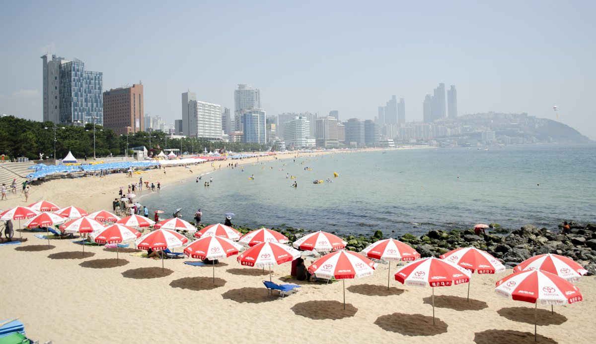
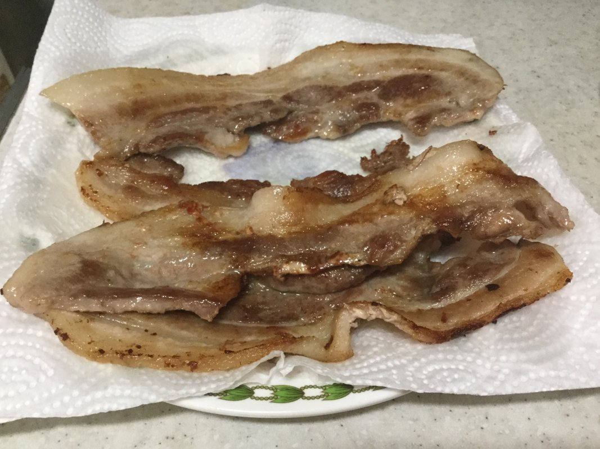
금수복국 본점・海雲台區中洞1路43號街23。1970年創立老店，砂鍋滾燙清燉河豚湯，深夜最極致的鮮甜解酒湯。
밀양순대돼지국밥・龜南路28號。正對大街核心位置，濃郁純豚骨大骨高湯，加入蝦醬韭菜，大口扒飯超溫暖。
海雲台區龜南路24號街20。炭火烤海鷗肉（豬橫膈膜肉）與松阪豬，烤盤凹槽內倒入特調蛋液烘出金黃嫩蛋！
海雲台尾浦 ➔ 藍線膠囊車 ➔ 青沙浦烤扇貝 ➔ Skyline Luge 釜山滑車 ➔ 海東龍宮寺 ➔ 廣安大橋生魚片
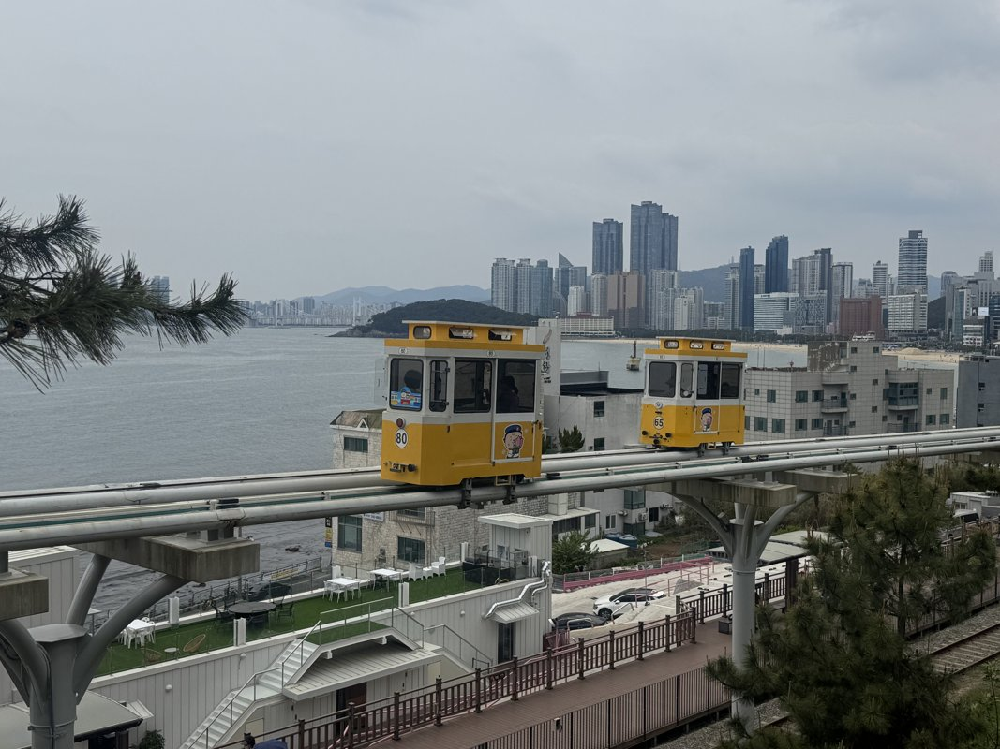
專屬獨立小車廂，時速 5 公里悠然漫遊海岸線，右側無遮蔽眺望湛藍東海與海浪拍岸，約 30 分鐘抵達青沙浦站。
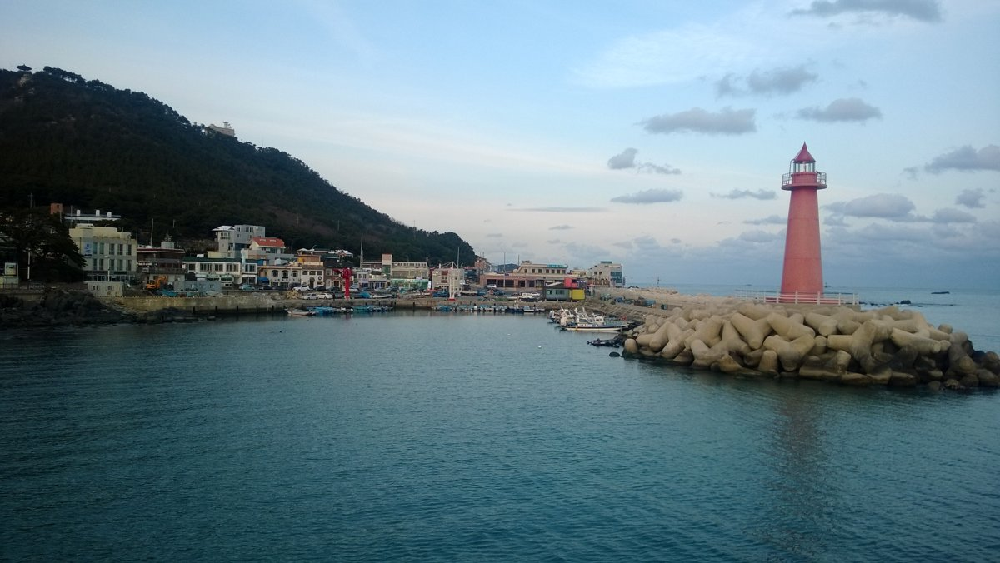
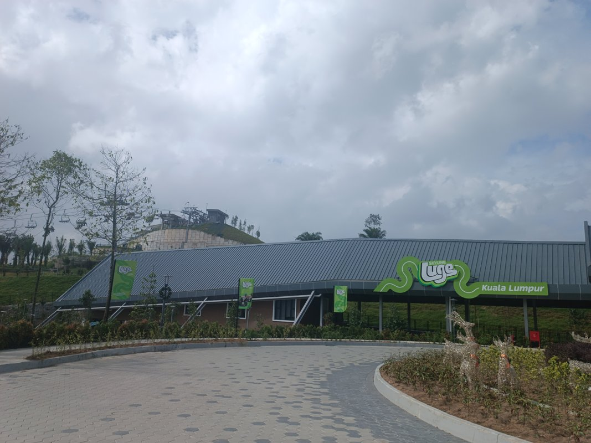
搭乘 Skyride 吊椅飽覽樂天城堡全景 ➔ 接受教練 1 分鐘操縱剎車教學 ➔ 沿 Wind、Peak、Marine 等 4 條賽道極速俯衝！（建議 3 回券，持有 Visit Busan Pass 免費兌換 2 次）。
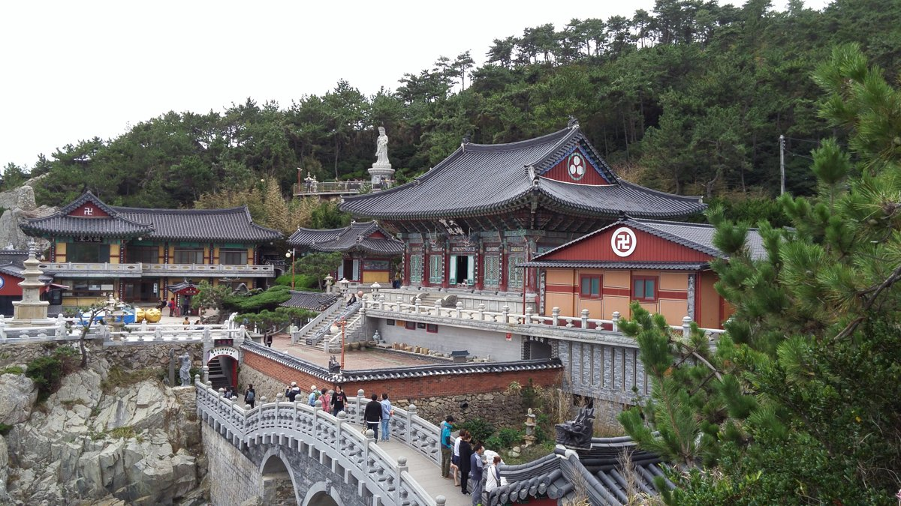
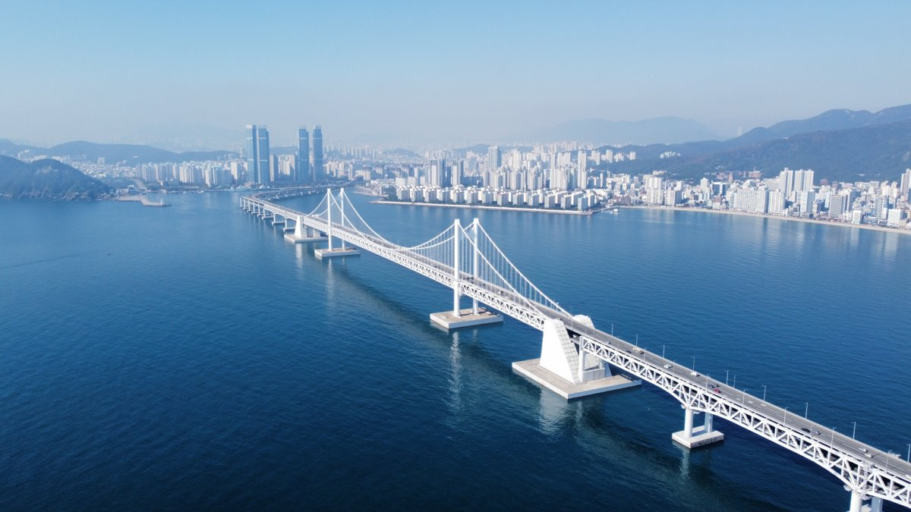
移師南浦 ➔ 札嘎其100號攤位帝王蟹 ➔ 國際市場棉被一條街抽真空放飯店 ➔ BIFF元祖黑糖餅 ➔ 影島白淺灘海岸隧道
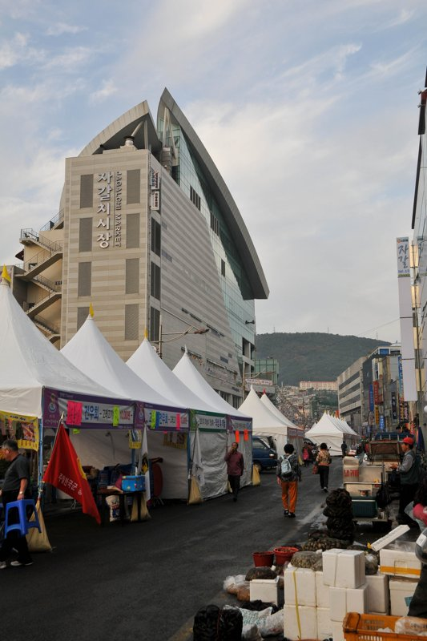
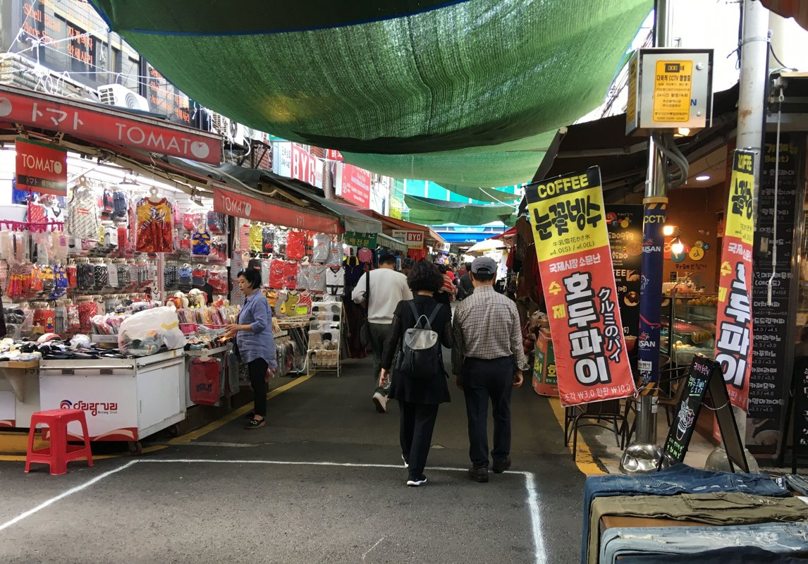
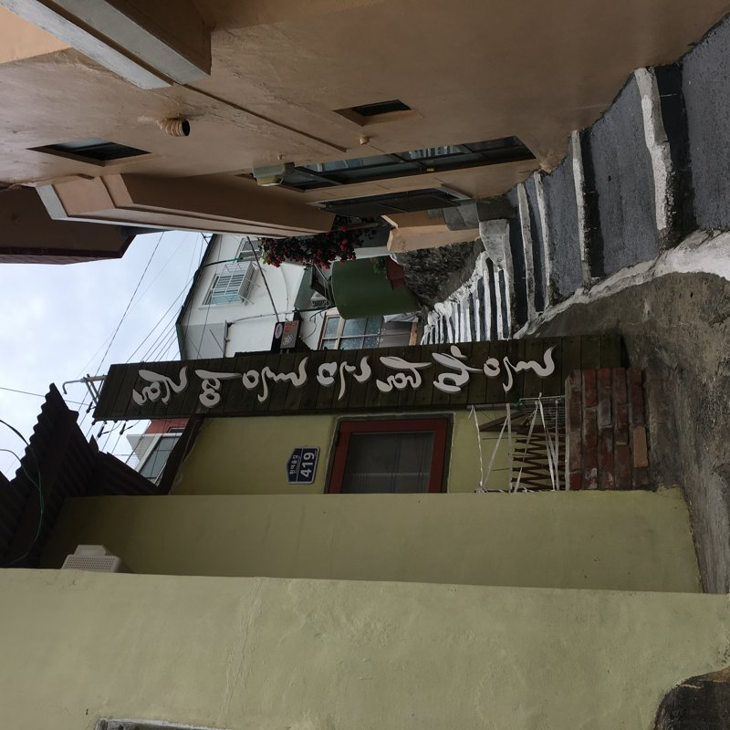
甘川文化村韓服 ➔ 土城新昌湯飯 ➔ 松島水晶纜車 ➔ 新世界 Spa Land 溫泉汗蒸幕 ➔ 西面熟成烤肉
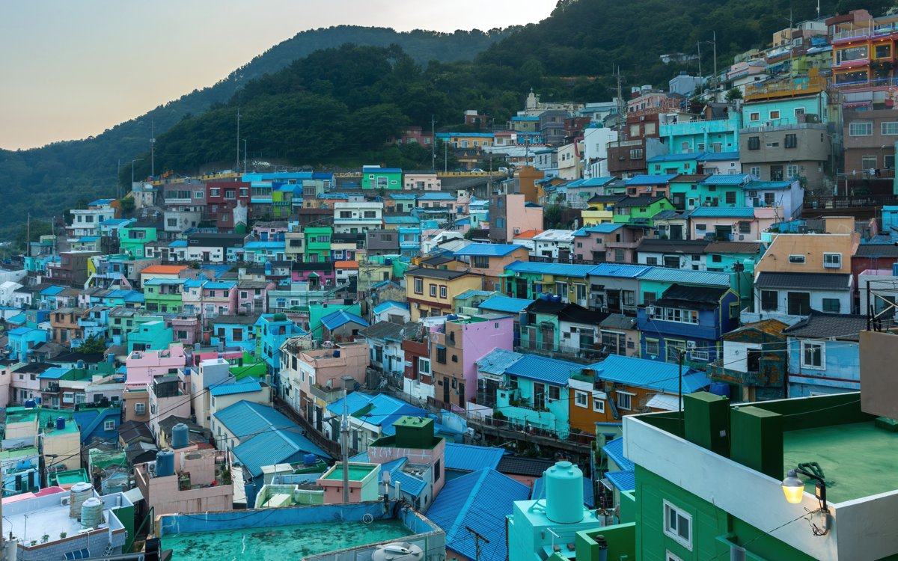
全套燙金韓服、蕾絲蓬裙、專業手工編髮飾品與手提包。坐在小王子身旁，留下俯瞰整座山城港灣的經典大片。
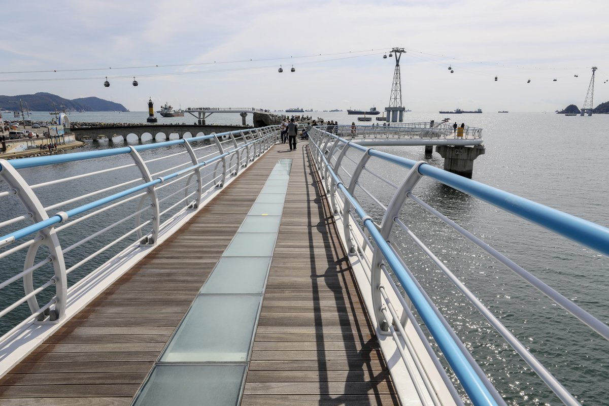
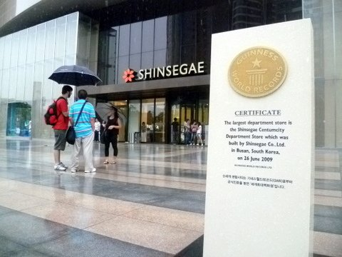
持 Visit Busan Pass 免費入場 4 小時！純天然碳酸溫泉、羅馬三溫暖、黃土房、冰雪房、戶外足湯花園。綁羊角毛巾喝米釀（식혜）配溫泉蛋，徹底掃除前幾天腳步疲勞。
西面80年豬肉湯飯 ➔ 田浦咖啡小巷 ➔ 西面地下商街掃貨 ➔ 機場返台
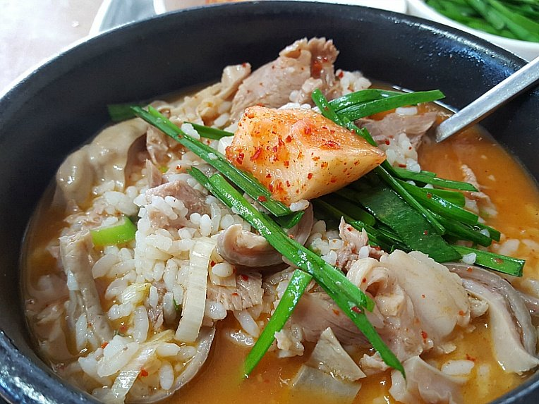
在 FM Coffee 來杯招牌冷萃或抹茶甜點，隨後至西面地下商街掃齊 Olive Young 韓系美妝保養品、海苔與伴手禮。回飯店取回抽真空的扁平棉被行李箱，搭地鐵無縫直達金海國際機場，完成 5 天 4 夜精采旅程！
網羅釜山最具代表性的 8 大在地經典美食與內行人推薦老舖，精準滿足味蕾。
대게 / 킹크랩
產地直送肉質緊緻鮮甜，現場現蒸保留原汁原味，最後一定要將蟹黃交由廚房大火快炒成香濃「蟹膏炒飯」。
推薦地：札嘎其市場 100 號攤位、機張市場。
돼지국밥
韓戰時期誕生的釜山靈魂庶民美食！純豬大骨長時精燉，湯頭濃郁或清甜各有門派，配搭辣韭菜與蝦醬提味。
推薦地：西面松亭三代、新昌土鍋湯、海雲台密陽湯飯。
숙성 삼겹살
達 3.5cm 的極致厚切，經低溫熟成工藝釋放肉汁，店員精準測溫烤盤代烤至表面金黃焦香，包水芹菜解膩絕配。
推薦地：味贊王鹽烤肉 (맛찬들)、海雲台伍班長。
씨앗호떡
釜山最具代表性的街頭甜點！糯米麵糰在平底鍋上煎得金黃酥脆，剪開後塞滿葵花子、南瓜子與花生肉桂糖粉。
推薦地：BIFF 廣場勝基元祖黑糖餅。
조개구이
青沙浦與尾浦漁村名物！在炭火上烤鮮活大扇貝，加入大塊奶油與大量牽絲莫札瑞拉起司，奶香與鮮甜交融。
推薦地：青沙浦秀敏家 (수민이네)、尾浦末家。
짚불 / 양념 곰장어
釜山特色海味，現點現撈去皮後以錫箔紙包覆炭烤，特調甜辣醬汁悶煮入味，口感如脆腸般彈牙有嚼勁。
推薦地：海雲台傳統市場盲鰻街、札嘎其盲鰻巷。
부산어묵
鮮魚漿含量高達 70% 以上，紮實彈牙，路邊攤串著吃熱氣騰騰，配無限量供應的甘甜白蘿蔔魚糕清湯暖心無比。
推薦地：古來思魚糕 (고래사어묵)、三珍魚糕 (삼진어묵)。
복국
韓國資深老饕與飲酒醒胃最愛！以大豆芽、水芹菜與蒜蓉襯托河豚肉的極致鮮嫩，湯清如水但甘甜厚重。
推薦地：錦秀河豚湯 海雲台總店 (금수복국，24H)。